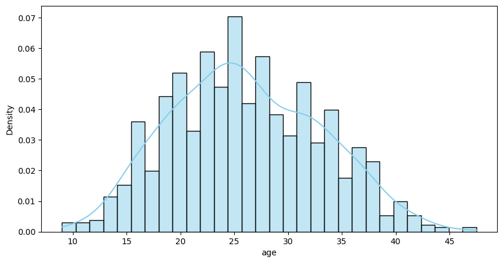
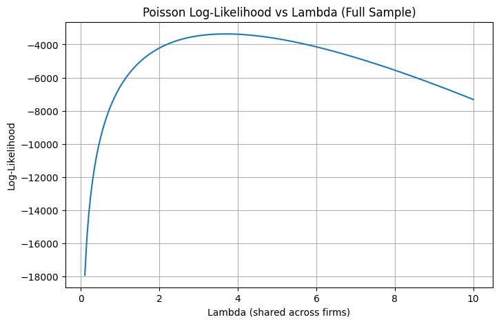

import pandas as pd
df = pd.read_csv('blueprinty.csv')
df.head()| patents | region | age | iscustomer | |
|---|---|---|---|---|
| 0 | 0 | Midwest | 32.5 | 0 |
| 1 | 3 | Southwest | 37.5 | 0 |
| 2 | 4 | Northwest | 27.0 | 1 |
| 3 | 3 | Northeast | 24.5 | 0 |
| 4 | 3 | Southwest | 37.0 | 0 |
| patents | region | age | iscustomer | |
|---|---|---|---|---|
| 0 | 0 | Midwest | 32.5 | 0 |
| 1 | 3 | Southwest | 37.5 | 0 |
| 2 | 4 | Northwest | 27.0 | 1 |
| 3 | 3 | Northeast | 24.5 | 0 |
| 4 | 3 | Southwest | 37.0 | 0 |
import matplotlib.pyplot as plt
import seaborn as sns
# Reload the dataset
df = pd.read_csv("blueprinty.csv")
# Set up the combined histogram + KDE plot
plt.figure(figsize=(10, 5))
# Histogram and KDE for non-customers
sns.histplot(df[df['iscustomer'] == 0]['age'],
bins=30,
kde=True,
stat="density",
label='Not Using Blueprinty',
color='skyblue',
alpha=0.5)
age_distribution_non_customers = df[df['iscustomer'] == 0]['age'].value_counts().sort_index()
age_distribution_non_customersage
9.0 1
9.5 1
10.0 2
11.0 1
11.5 3
..
43.0 1
43.5 1
44.0 2
46.5 1
47.5 1
Name: count, Length: 72, dtype: int64import numpy as np
from scipy.special import gammaln
def poisson_loglikelihood(lmbda, y):
"""
Compute the log-likelihood of a Poisson model.
Parameters:
lmbda: array-like, predicted Poisson means (e.g. exp(X @ beta))
y: array-like, observed counts
Returns:
log-likelihood value (scalar)
"""
lmbda = np.asarray(lmbda)
y = np.asarray(y)
return np.sum(-lmbda + y * np.log(lmbda) - gammaln(y + 1))y_obs_full = df['patents'].values
lambda_range = np.linspace(0.1, 10, 200)
log_likelihoods_full = [poisson_loglikelihood(lmbda=np.repeat(lmb, len(y_obs_full)), y=y_obs_full)
for lmb in lambda_range]
plt.figure(figsize=(8, 5))
plt.plot(lambda_range, log_likelihoods_full)
plt.title('Poisson Log-Likelihood vs Lambda (Full Sample)')
plt.xlabel('Lambda (shared across firms)')
plt.ylabel('Log-Likelihood')
plt.grid(True)
plt.show()
import numpy as np
from scipy.optimize import minimize
from scipy.special import gammaln
# 定义负的 log-likelihood（因为 minimize 默认最小化）
def neg_log_likelihood(lmbda_scalar, y):
lmbda = np.repeat(lmbda_scalar[0], len(y))
return -np.sum(-lmbda + y * np.log(lmbda) - gammaln(y + 1))
# 目标数据
y_data = df['patents'].values
# 初始猜测（可以用平均值）
initial_guess = [np.mean(y_data)]
# 使用 scipy.optimize.minimize 进行拟合
result = minimize(neg_log_likelihood, x0=initial_guess, args=(y_data,), bounds=[(0.0001, None)])
# 打印结果
lambda_mle = result.x[0]
print(f"MLE for lambda (via optimization): {lambda_mle:.4f}")MLE for lambda (via optimization): 3.6847from scipy.optimize import minimize
X = df[['age']].copy()
X['age_squared'] = X['age']**2
X['iscustomer'] = df['iscustomer']
X = pd.concat([X, pd.get_dummies(df['region'], drop_first=True)], axis=1)
X = X.astype(float)
X = X.values
y = df['patents'].values
init_beta = np.ones(X.shape[1]) * 0.1
res = minimize(
fun=neg_poisson_loglikelihood,
x0=init_beta,
args=(X, y),
method='Nelder-Mead',
options={'disp': True, 'maxiter': 1000}
)
beta_mle = res.x
print("Estimated beta coefficients:")
print(beta_mle)Optimization terminated successfully.
Current function value: 3266.879001
Iterations: 577
Function evaluations: 905
Estimated beta coefficients:
[ 0.10525892 -0.00218266 0.14027886 0.13123288 0.05349781 0.1434903
0.12860536] message: Optimization terminated successfully.
success: True
status: 0
fun: 3266.879001345187
x: [ 1.053e-01 -2.183e-03 1.403e-01 1.312e-01 5.350e-02
1.435e-01 1.286e-01]
nit: 577
nfev: 905
final_simplex: (array([[ 1.053e-01, -2.183e-03, ..., 1.435e-01,
1.286e-01],
[ 1.052e-01, -2.182e-03, ..., 1.435e-01,
1.286e-01],
...,
[ 1.052e-01, -2.182e-03, ..., 1.435e-01,
1.286e-01],
[ 1.053e-01, -2.183e-03, ..., 1.435e-01,
1.285e-01]]), array([ 3.267e+03, 3.267e+03, 3.267e+03, 3.267e+03,
3.267e+03, 3.267e+03, 3.267e+03, 3.267e+03]))from scipy.optimize import minimize
import numpy as np
init_beta = np.zeros(X.shape[1])
res = minimize(
fun=neg_poisson_loglikelihood,
x0=init_beta,
args=(X, y),
method='Nelder-Mead',
options={'disp': True, 'maxiter': 2000}
)
beta_mle = res.x
print("Estimated beta coefficients:")
print(beta_mle)Optimization terminated successfully.
Current function value: 3259.214530
Iterations: 685
Function evaluations: 1054
Estimated beta coefficients:
[-0.32950681 0.13700644 -0.00276358 0.21449006 -0.01353866 -0.05320079
0.02214911 0.04299568]import pandas as pd
import numdifftools as nd
hessian_fun = nd.Hessian(lambda b: neg_poisson_loglikelihood(b, X, y))
H = hessian_fun(beta_mle)
cov_matrix = np.linalg.inv(H)
standard_errors = np.sqrt(np.diag(cov_matrix))
columns = ['intercept', 'age', 'age_squared', 'iscustomer'] + list(pd.get_dummies(df['region'], drop_first=True).columns)
results_table = pd.DataFrame({
'Variable': columns,
'Beta': beta_mle,
'Std. Error': standard_errors
})
results_table/var/folders/32/xz9pd3zx1yv2tk_19psx52z40000gn/T/ipykernel_23113/3045299706.py:11: RuntimeWarning: overflow encountered in exp
lmbda = np.exp(linear_pred)| Variable | Beta | Std. Error | |
|---|---|---|---|
| 0 | intercept | -0.329507 | 6.520750e-02 |
| 1 | age | 0.137006 | 2.057879e-03 |
| 2 | age_squared | -0.002764 | 1.473287e-09 |
| 3 | iscustomer | 0.214490 | 3.075139e-02 |
| 4 | Northeast | -0.013539 | 4.321331e-02 |
| 5 | Northwest | -0.053201 | 5.356145e-02 |
| 6 | South | 0.022149 | 5.239738e-02 |
| 7 | Southwest | 0.042996 | 4.660574e-02 |
import statsmodels.api as sm
import pandas as pd
X_check = df[['age']].copy()
X_check['age_squared'] = X_check['age']**2
X_check['iscustomer'] = df['iscustomer']
X_check = pd.concat([X_check, pd.get_dummies(df['region'], drop_first=True)], axis=1)
X_check = sm.add_constant(X_check)
X_check = X_check.astype(float)
glm_poisson = sm.GLM(df['patents'], X_check, family=sm.families.Poisson())
glm_results = glm_poisson.fit()
print(glm_results.summary()) Generalized Linear Model Regression Results
==============================================================================
Dep. Variable: patents No. Observations: 1500
Model: GLM Df Residuals: 1492
Model Family: Poisson Df Model: 7
Link Function: Log Scale: 1.0000
Method: IRLS Log-Likelihood: -3258.1
Date: Wed, 07 May 2025 Deviance: 2143.3
Time: 19:37:52 Pearson chi2: 2.07e+03
No. Iterations: 5 Pseudo R-squ. (CS): 0.1360
Covariance Type: nonrobust
===============================================================================
coef std err z P>|z| [0.025 0.975]
-------------------------------------------------------------------------------
const -0.5089 0.183 -2.778 0.005 -0.868 -0.150
age 0.1486 0.014 10.716 0.000 0.121 0.176
age_squared -0.0030 0.000 -11.513 0.000 -0.003 -0.002
iscustomer 0.2076 0.031 6.719 0.000 0.147 0.268
Northeast 0.0292 0.044 0.669 0.504 -0.056 0.115
Northwest -0.0176 0.054 -0.327 0.744 -0.123 0.088
South 0.0566 0.053 1.074 0.283 -0.047 0.160
Southwest 0.0506 0.047 1.072 0.284 -0.042 0.143
===============================================================================import statsmodels.api as sm
import numpy as np
import pandas as pd
# Assuming X and y are your data
X_df = pd.DataFrame(X, columns=[
'intercept', 'age', 'age_squared', 'iscustomer',
'Northeast', 'Northwest', 'South', 'Southwest'
])
# Fit the model if it's not already done
model = sm.GLM(y, X_df, family=sm.families.Poisson(link=sm.families.links.log())).fit()
# Now create counterfactuals
X_0 = X_df.copy()
X_0['iscustomer'] = 0
X_1 = X_df.copy()
X_1['iscustomer'] = 1
# Predict
y_pred_0 = model.predict(X_0)
y_pred_1 = model.predict(X_1)
# Treatment effect
treatment_effect = y_pred_1 - y_pred_0
average_effect = treatment_effect.mean()
average_effect/Users/wenxinxu/Library/Python/3.9/lib/python/site-packages/statsmodels/genmod/families/links.py:13: FutureWarning: The log link alias is deprecated. Use Log instead. The log link alias will be removed after the 0.15.0 release.
warnings.warn(np.float64(0.7927680710452972)| Unnamed: 0 | id | days | last_scraped | host_since | room_type | bathrooms | bedrooms | price | number_of_reviews | review_scores_cleanliness | review_scores_location | review_scores_value | instant_bookable | |
|---|---|---|---|---|---|---|---|---|---|---|---|---|---|---|
| 0 | 1 | 2515 | 3130 | 4/2/2017 | 9/6/2008 | Private room | 1.0 | 1.0 | 59 | 150 | 9.0 | 9.0 | 9.0 | f |
| 1 | 2 | 2595 | 3127 | 4/2/2017 | 9/9/2008 | Entire home/apt | 1.0 | 0.0 | 230 | 20 | 9.0 | 10.0 | 9.0 | f |
| 2 | 3 | 3647 | 3050 | 4/2/2017 | 11/25/2008 | Private room | 1.0 | 1.0 | 150 | 0 | NaN | NaN | NaN | f |
| 3 | 4 | 3831 | 3038 | 4/2/2017 | 12/7/2008 | Entire home/apt | 1.0 | 1.0 | 89 | 116 | 9.0 | 9.0 | 9.0 | f |
| 4 | 5 | 4611 | 3012 | 4/2/2017 | 1/2/2009 | Private room | NaN | 1.0 | 39 | 93 | 9.0 | 8.0 | 9.0 | t |
| Unnamed: 0 | id | days | last_scraped | host_since | room_type | bathrooms | bedrooms | price | number_of_reviews | review_scores_cleanliness | review_scores_location | review_scores_value | instant_bookable | |
|---|---|---|---|---|---|---|---|---|---|---|---|---|---|---|
| 0 | 1 | 2515 | 3130 | 4/2/2017 | 9/6/2008 | Private room | 1.0 | 1.0 | 59 | 150 | 9.0 | 9.0 | 9.0 | f |
| 1 | 2 | 2595 | 3127 | 4/2/2017 | 9/9/2008 | Entire home/apt | 1.0 | 0.0 | 230 | 20 | 9.0 | 10.0 | 9.0 | f |
| 2 | 3 | 3647 | 3050 | 4/2/2017 | 11/25/2008 | Private room | 1.0 | 1.0 | 150 | 0 | NaN | NaN | NaN | f |
| 3 | 4 | 3831 | 3038 | 4/2/2017 | 12/7/2008 | Entire home/apt | 1.0 | 1.0 | 89 | 116 | 9.0 | 9.0 | 9.0 | f |
| 4 | 5 | 4611 | 3012 | 4/2/2017 | 1/2/2009 | Private room | NaN | 1.0 | 39 | 93 | 9.0 | 8.0 | 9.0 | t |
| ... | ... | ... | ... | ... | ... | ... | ... | ... | ... | ... | ... | ... | ... | ... |
| 40623 | 40624 | 18008937 | 266 | 4/2/2017 | 7/10/2016 | Entire home/apt | 1.5 | 2.0 | 150 | 0 | NaN | NaN | NaN | t |
| 40624 | 40625 | 18009045 | 366 | 4/2/2017 | 4/1/2016 | Private room | 1.0 | 1.0 | 125 | 0 | NaN | NaN | NaN | f |
| 40625 | 40626 | 18009065 | 587 | 4/2/2017 | 8/24/2015 | Private room | 1.0 | 1.0 | 80 | 0 | NaN | NaN | NaN | t |
| 40626 | 40627 | 18009650 | 335 | 4/2/2017 | 5/2/2016 | Private room | 1.0 | 1.0 | 69 | 0 | NaN | NaN | NaN | t |
| 40627 | 40628 | 18009669 | 1 | 4/2/2017 | 4/1/2017 | Entire home/apt | 1.0 | 1.0 | 115 | 0 | NaN | NaN | NaN | t |
40628 rows × 14 columns
review_scores_value 0.252437
review_scores_location 0.252388
review_scores_cleanliness 0.250935
bathrooms 0.003938
bedrooms 0.001871
host_since 0.000861
Unnamed: 0 0.000000
id 0.000000
days 0.000000
last_scraped 0.000000
room_type 0.000000
price 0.000000
number_of_reviews 0.000000
instant_bookable 0.000000
dtype: float64import statsmodels.api as sm
import statsmodels.formula.api as smf
# Poisson regression model
model = smf.glm(
formula="number_of_reviews ~ price + C(room_type) + review_scores_cleanliness + review_scores_location + review_scores_value + C(instant_bookable)",
data=df_clean,
family=sm.families.Poisson()
).fit()
model.summary()| Dep. Variable: | number_of_reviews | No. Observations: | 30346 |
| Model: | GLM | Df Residuals: | 30338 |
| Model Family: | Poisson | Df Model: | 7 |
| Link Function: | Log | Scale: | 1.0000 |
| Method: | IRLS | Log-Likelihood: | -5.3507e+05 |
| Date: | Wed, 07 May 2025 | Deviance: | 9.4783e+05 |
| Time: | 20:03:25 | Pearson chi2: | 1.42e+06 |
| No. Iterations: | 6 | Pseudo R-squ. (CS): | 0.5380 |
| Covariance Type: | nonrobust |
| coef | std err | z | P>|z| | [0.025 | 0.975] | |
| Intercept | 3.5679 | 0.015 | 233.369 | 0.000 | 3.538 | 3.598 |
| C(room_type)[T.Private room] | -0.0252 | 0.003 | -9.406 | 0.000 | -0.031 | -0.020 |
| C(room_type)[T.Shared room] | -0.2648 | 0.009 | -30.926 | 0.000 | -0.282 | -0.248 |
| C(instant_bookable)[T.t] | 0.3324 | 0.003 | 115.542 | 0.000 | 0.327 | 0.338 |
| price | -7.422e-06 | 7.57e-06 | -0.980 | 0.327 | -2.23e-05 | 7.42e-06 |
| review_scores_cleanliness | 0.1130 | 0.001 | 76.151 | 0.000 | 0.110 | 0.116 |
| review_scores_location | -0.0821 | 0.002 | -51.797 | 0.000 | -0.085 | -0.079 |
| review_scores_value | -0.0900 | 0.002 | -50.354 | 0.000 | -0.094 | -0.087 |
import statsmodels.api as sm
import statsmodels.formula.api as smf
# Fit the model (formula same as in Poisson)
nb_model = smf.glm(
formula="number_of_reviews ~ price + C(room_type) + C(instant_bookable) + review_scores_cleanliness + review_scores_location + review_scores_value",
data=df_clean,
family=sm.families.NegativeBinomial()
).fit()
nb_model.summary()/Users/wenxinxu/Library/Python/3.9/lib/python/site-packages/statsmodels/genmod/families/family.py:1367: ValueWarning: Negative binomial dispersion parameter alpha not set. Using default value alpha=1.0.
warnings.warn("Negative binomial dispersion parameter alpha not "| Dep. Variable: | number_of_reviews | No. Observations: | 30346 |
| Model: | GLM | Df Residuals: | 30338 |
| Model Family: | NegativeBinomial | Df Model: | 7 |
| Link Function: | Log | Scale: | 1.0000 |
| Method: | IRLS | Log-Likelihood: | -1.2313e+05 |
| Date: | Wed, 07 May 2025 | Deviance: | 48337. |
| Time: | 20:15:00 | Pearson chi2: | 6.51e+04 |
| No. Iterations: | 21 | Pseudo R-squ. (CS): | 0.04292 |
| Covariance Type: | nonrobust |
| coef | std err | z | P>|z| | [0.025 | 0.975] | |
| Intercept | 4.2213 | 0.077 | 55.167 | 0.000 | 4.071 | 4.371 |
| C(room_type)[T.Private room] | -0.0054 | 0.013 | -0.429 | 0.668 | -0.030 | 0.019 |
| C(room_type)[T.Shared room] | -0.2298 | 0.037 | -6.269 | 0.000 | -0.302 | -0.158 |
| C(instant_bookable)[T.t] | 0.3231 | 0.015 | 21.776 | 0.000 | 0.294 | 0.352 |
| price | 1.711e-05 | 3.3e-05 | 0.519 | 0.604 | -4.75e-05 | 8.17e-05 |
| review_scores_cleanliness | 0.1959 | 0.007 | 28.924 | 0.000 | 0.183 | 0.209 |
| review_scores_location | -0.1167 | 0.008 | -14.841 | 0.000 | -0.132 | -0.101 |
| review_scores_value | -0.2088 | 0.009 | -23.724 | 0.000 | -0.226 | -0.192 |
mean_reviews = df_clean['number_of_reviews'].mean()
var_reviews = df_clean['number_of_reviews'].var()
print(f"Mean: {mean_reviews}, Variance: {var_reviews}")
print("Poisson AIC:", model.aic)
print("Negative Binomial AIC:", nb_model.aic)
overdispersion = var_reviews > mean_reviews * 1.5
print("Overdispersion?", overdispersion)Mean: 21.252323205694324, Variance: 1031.7342877315536
Poisson AIC: 1070158.6878802574
Negative Binomial AIC: 246285.75583628635
Overdispersion? True